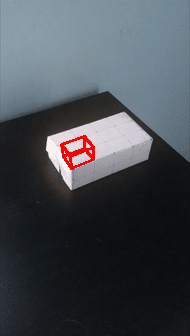
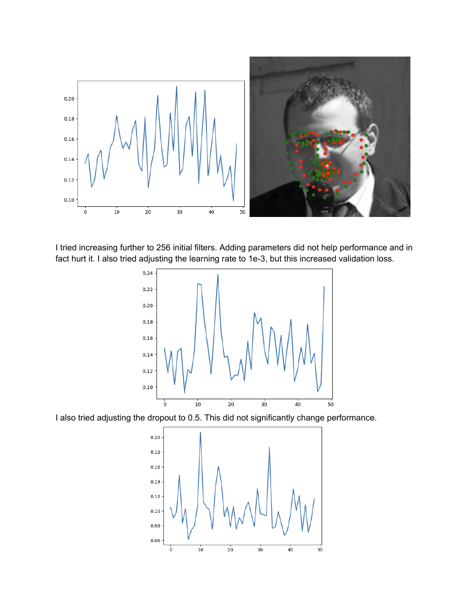
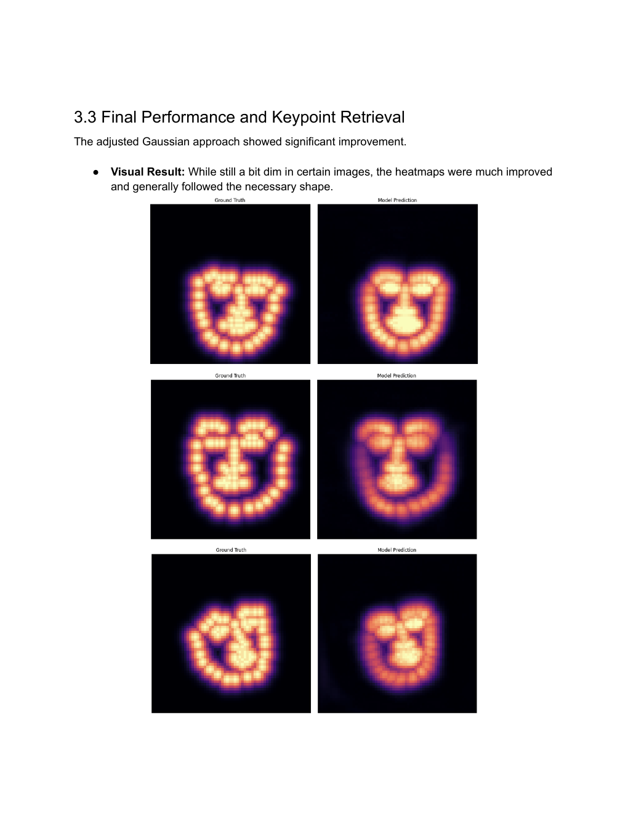
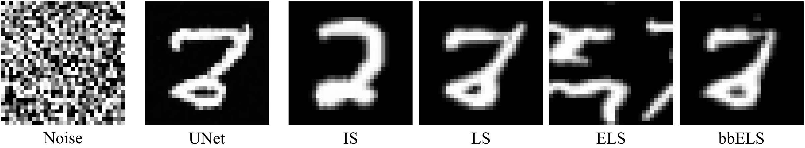

A collection of projects from CS280 (Computer Vision) at UC Berkeley. Topics range from classical camera calibration and feature tracking to deep learning approaches for keypoint detection and generative modeling.
Built a from-scratch augmented reality pipeline using only a webcam and a checkerboard. The approach: manually annotate 2D-to-3D correspondences in the first frame, then track them across frames using OpenCV's Median Flow tracker.
For each frame, a projection matrix is estimated via least squares from the tracked 2D-3D point pairs. This gives us the camera pose without any explicit calibration step, hence the "poor man's" framing. The estimated projection is then used to overlay a 3D robot hand model onto the scene in the correct perspective.
The pipeline also includes a full camera calibration step using checkerboard corners to estimate intrinsic parameters K, and a homography-based approach to cross-validate the calibration results.

3D robot hand projected onto live video using estimated camera pose
Implemented three progressively more powerful approaches to detecting 69 facial keypoints on the iBUG 300-W dataset.
Part 1: Custom CNN. Built a 5-layer convolutional network with filter widths scaling from 64 to 512, max pooling, and a two-layer regression head. Systematically tuned filter count, learning rate, and dropout.
Part 2: ResNet Transfer Learning. Adapted a pretrained ResNet with a custom regression head. Used a two-stage fine-tuning strategy: first training only the head for a few epochs, then unfreezing the full model. This roughly doubled performance over the scratch CNN.
Part 3: Gaussian Heatmaps. Reformulated the problem as heatmap regression using a UNet-style architecture. Each keypoint is encoded as a 2D Gaussian blob; the model predicts one heatmap per keypoint and peaks are decoded back to coordinates. The heatmap approach yields significantly sharper localization.

Red = predicted, green = ground truth. Simple CNN output.

Ground truth (left) vs predicted (right) Gaussian heatmaps.
Implemented and compared several flow matching formulations for generative modeling on MNIST. Flow matching learns an ODE vector field that transports noise into data by minimizing the difference between the predicted and ideal flow at each timestep.
Built a UNet with residual blocks, time-conditioning via sinusoidal embeddings, and multi-head self-attention at the bottleneck. Trained four flow matching variants on top of the same backbone:
UNet (vanilla) matches the simplest linear interpolation flow. IS (Independent Samples) samples source and target independently at each batch step. LS (Linear Schedule) uses a fixed sigma schedule. ELS / bbELS apply entropic and bounding-box entropic regularization to reduce transport cost.
The UNet baseline produced the cleanest samples; the entropic variants traded sharpness for more diverse modes.

Noise (left) denoised by 5 flow matching variants: UNet, IS, LS, ELS, bbELS.
Extended the CUT3R 3D reconstruction model by replacing its deterministic RGB output head with a Flow Matching generative head. The goal: synthesize high-quality novel views directly from CUT3R's latent scene representation, rather than averaging over uncertain geometry.
Trained two variants: an 8-block DiT architecture jointly on reconstruction and novel view synthesis, and a 12-block model specialized for NVS only. The generative head achieves improved LPIPS on novel views compared to the baseline DPT head.
Flow Matching head for novel view synthesis from CUT3R's latent representation. Results, architecture diagrams, and quantitative comparisons.